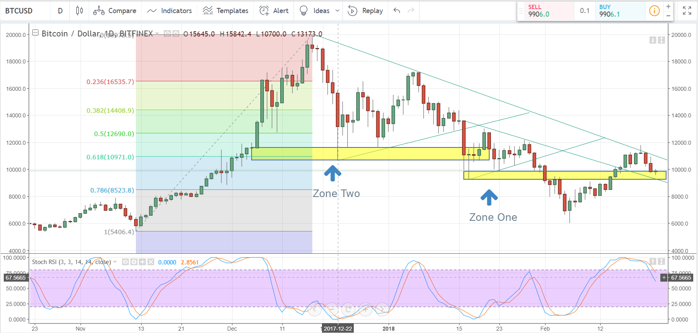

OUR COMMUNITY
Provides latest sources and Information

-
Hal Finney
The receiver of the first Bitcoin
-
Satoshi Nakamoto
Creater and richest holder
-
Barry Silbert
Top Bitcoin Investor
Bitcoin and the blockchain that it uses are a revolution in technology. It enables information to be stored in a distributed manner so that no-one has control over the network and that no-one is required to trust anyone else in the network.
Bitcoin’s creator, Satoshi Nakamoto, did an excellent job of designing Bitcoin to have the necessary amount of complexity and no more. Despite this, there are several details of Bitcoin that are necessary to its functionality. In this section, we’ll describe the functionality and underlying purpose of the nuts and bolts of the Bitcoin protocol.
Block Size
Cryptocurrency is based on the blockchain, a data structure consisting of a series of blocks chained together using cryptographic hash functions. One of the key features of a Bitcoin block is the block size.
In the original Bitcoin protocol, the maximum size of a block in the blockchain was not specified. However, this left the protocol potentially vulnerable to Denial of Service attacks where attackers flood the network with tons of transactions to make block creation and blockchain storage impossible. In order to prevent Denial of Service attacks, the decision was made to limit Bitcoin blocks to a maximum size of one megabyte, ensuring that blocks did not become too large to effectively transmit and store in network nodes.
This decision places an upper limit on the number of transactions that can fit within a single block. This can cause delays in processing transactions since any transactions that cannot fit in the current block must wait until the next block to be included in the blockchain.
Bitcoin Cash, an altcoin forked from the Bitcoin protocol increases the block size from 1 MB to 8 MB. This is intended as a simple change to the protocol that nonetheless increases the maximum number of transactions that can be processed by a factor of eight.
Transaction Speed
Another issue of the Bitcoin cryptocurrency is the speed at which transactions can be processed and trusted. Because of the possibility of divergent blockchains, it’s usually recommended that the people involved in a transaction wait until it has been included in three blocks of the blockchain before fully trusting it. Since Bitcoin’s blocks are created every ten minutes, this could mean waiting half an hour for a transaction to process (which is a bit long to wait for a cup of coffee).
The Lightning Network mentioned in the previous section also helps to alleviate the issues around transaction speed on Bitcoin. The Lightning Network is designed to provide instantaneous, trusted transactions by default. If something goes wrong, the transaction is simply performed on the blockchain itself. The theoretically infinite scalability of the Lightning Network means that the Bitcoin network can grow to meet user demand while providing security backed by blockchain technology.
Processing Fees
Bitcoin includes processing fees for two main reasons: helping to incentivize the miners that keep the network running and allowing users to pay for priority for their transactions. Since the network has a limited capacity, the ability to pay for priority makes it possible for users to ensure that urgent transactions are added to the blockchain as part of the next block to be created. However, when the load on the network is high, this means that transaction fees can rise to ridiculous levels as users in a hurry bid higher and higher for priority. In December 2017, average Bitcoin transaction fees rose as high as 28 USD. This made Bitcoin completely unusable for small transactions like buying a cup of coffee as the fee amounts exceeded the value being transferred. Other cryptocurrencies have been designed to operate in a feeless manner to allow users to perform transactions more similar to credit card transactions.
Potential Applications
Bitcoin was developed first and foremost as a means of performing financial transactions in a secure, decentralized manner. While it does have some level of support for developers to write scripts that run on the blockchain, the intention is for these scripts to be used to define how financial transactions operate. For example, a transaction may be designed to only go through when a set of conditions have been met (perhaps being signed by more than one party). Bitcoin was never designed to have the complete functionality of a standard computer and this limits what it can do.
Other cryptocurrencies have been designed to give developers the ability to run any program on the blockchain that they can run on a standard computer. These “smart contract” platforms, like Ethereum and Cardano, expand the potential applications of the blockchain and have enabled the wave of new cryptocurrencies designed to provide certain functions or services. These systems have revolutionized how business is done by allowing old systems to be revised to make use of the advantages provided by the blockchain and by enabling previously impossible services and organizations to be created.
The receiver of the first Bitcoin
Creater and richest holder
Top Bitcoin Investor